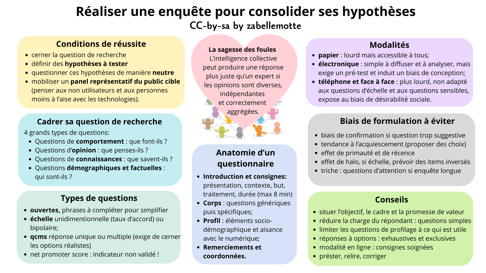

Réaliser une enquête pour consolider ses hypothèses
En un coup d'oeil

- Etape UX
- 2. Exploration
- Catégorie
- UX design
- Intérêt
- Consolider ses hypothèses et les prioriser en touchant un échantillon d'utilisateurs plus large
- Complexité
- Moyenne
- Durée
- 1 à 2 jours pour composer l'enquête, la tester, l'adapter et analyser ses résultats
- En vidéo
- Les principes de la sagesse de foules (Hypermind)
- En résumé
- La sagesse des foules ou les conditions pour réussir une enquête
- Cadrer sa question de recherche
- Choisir une modalité d'enquête
- Cerner l'anatomie d'une enquête
- Choisir les types de questions
- Etre conscient du peu d'intérêt du net promoter score
- Eviter les biais de formulation et de passation
- 8 conseils pour rédiger une enquête
- Recruter les participants
- La petite histoire
En résumé
Les enquêtes constituent une méthode quantitative qui mérite d'être exploitée lorsqu'on a une idée des pistes à explorer pour répondre à une question UX. Cette approche exige de bien cerner la question de recherche, d'être en mesure de définir une série d'hypothèses à tester, et de questionner ces hypothèses de manière neutre. Les participants à une enquête doivent constituer un pannel représentatif du public du service ciblé, en veillant à penser aux non utilisateurs si c'est pertinent.
La sagesse des foules ou les conditions pour réussir une enquête
La sagesse des foules désigne un important résultat de recherche qui a montré qu'un grand nombre de personnes, lorsqu'elles donnent leur avis de manière indépendante, peuvent collectivement produire une réponse plus juste qu'un expert isolé.
L'idée originale est d'abord liée à une expérience menée par Francis Galton, l'un des pionniers de la statistique moderne. En 1906, il observe lors d'une foire qu'en faisant la moyenne des estimations de plusieurs centaines de personnes sur le poids d'un bœuf, on obtient un résultat presque exact.
James Surowiecki, journaliste et essayiste américain, popularise le concept avec son livre The Wisdom of Crowds. Il montre que l'intelligence collective fonctionne particulièrement bien lorsque les opinions sont diverses, indépendantes et correctement agrégées.
Cadrer sa question de recherche
Les enquêtes font partie du pannel de méthodes quantitatives (avec les tris de cartes et analytics) qui visent à mieux comprendre qui est l'utilisateur, quels sont ses besoins, et quels sont ses problèmes. Les approches qualitatives comme l'interview, visent plutôt à comprendre le comportement et les émotions d'un utilisateur.
Les questions d'une enquête UX visent en général à répondre à 4 grandes questions:
- Questions de comportement: que font-ils ?
- Questions d'opinion: que pensent-ils ?
- Questions de connaissances: que savent-ils ?
- Questions démographiques et factuelles: qui sont-ils ?
Choisir une modalité d'enquête
Les enquêtes peuvent être menées sous diverses modalités qui peuvent être mixées pour garantir la diversité des répondants :
- papier: plus lourd au niveau logistique mais permet d'impliquer des personnes moins à l'aise avec les technologies;
- électronique: simple à analyser, diffusé facilement à un grand nombre de participants, mais nécessite un pré-test rigoureux car les répondants ne peuvent pas demander d'informations complémentaires, et ne permet pas de toucher les personnes moins à l'aise avec le numérique; leur version guérilla se décline sous une forme très courte qui peut récolter plus de répondants soit via envoi par mail , soit via une intégration à une site web; il faut dans ce cas éviter le caractère viral de l'enquête pour limiter le risque de réponse au hasard;
- téléphone: permet de cibler une population spécifique et d'expliquer les questions si nécessaire mais prends du temps et convient mal aux questions d'échelle ou aux questions sensibles;
- face à face: très lourd, pas adapté aux questions sensibles et plus sujet aux biais de désirabilité sociale; convient bien pour les populations moins à l'aise avec les technologies; peuvent être dérivés en mode guérilla pour privilégier la rapidité et la légèreté, tout en conservant une sélection d’utilisateurs pertinente pour les usages étudiés, sans viser la représentativité statistique de la population globale.
Cerner l'anatomie d'une enquête
Une enquête est en général structurée en 4 parties:
- Introduction et consignes: présentation de l'étude, du commanditaire, du contexte et du but; intormations sur le traitement et garantie d'anonymat (RGPD); indication du nombre de questions et de la durée pour remplir l'enquête;
- Corps du questionnaire: commencer par les questions engageantes, aller des questions génériques aux questions spécifiques et amener les questions sensibles sous forme indirecte après quelques questions plus générales;
- Profil: ces questions ciblent les éléments socio-démographiques (âge, sexe, niveau d'étude, profession, ...); il peut être pertinent de s'inspirer des données statistiques Stabel pour avoir une idée préalable des profils sur certaines questions spécifiques;
- Remerciement et coordonnées de contact
Quelques chiffres sur la longueur d'un questionnaire:
- Plus un questionnaire est long, moins les participants consacrent de temps à chaque question (40s par question pour un questionnaire de 2 items, contre 19s pour un questionnaire de 26 à 30 items);
- au-delà de 8 minutes, le taux d'abandon passe de 5 à 20%;
- il est déconseillé de composer une enquête qui prend plus de 15 minutes pour répondre;
- sur smartphone, compléter un questionnaire en ligne prend plus de temps.
Choisir les types de questions
Les questions ouvertes permettent au répondant de s'exprimer librement. Elles peuvent prendre la forme de complétion de phrase pour cadrer sur un point et simplifier l'analyse.
Les questions peuvent exiger de se positionner sur une échelle unidimensionnelle (comme un taux d'accord) ou bipolaire (entre innovant et dépassé par exemple).
Les questions à choix multiples peuvent aussi intégrer une enquête avec possibilité de une ou plusieurs réponses. Il faut dans ce cas avoir une bonne idée des options courantes de réponses (obtenues par exemple au travers d'interviews) et éventuellement prévoir une option "Autre, à préciser".
La veille dans la littérature permet de trouver des questions sur différents aspects avec une forme validée. J'épingle notamment le fait que Guillaume Gronier nous promet de lister les références liées à la formulation des questions de profil prochainement.
Etre conscient des limites du net promoter score
Le net promoter score est un indicateur calculé sur base du taux d'accord avec la question
"Dans quelle mesure recommanderiez-vous ce service ?".
Le taux d'accord est mesuré sur une échelle de 1 à 10 et le net promoter score est calculé comme suit:
(pourcentage de clients avec un taux d'accord de 9 ou 10) - (pourcentage de client avec un taux d'accord de 6 ou moins).
Le premier groupe est aussi désigné "les promoteurs" et le second "les détracteurs", alors que les personnes qui répondent
avec un taux d'accord de 6 ou 7 représentent "les passifs" qui n'entrent pas en compte dans le calcul.
L'intérêt de ce score réside dans sa simplicité et dans la possiblité de comparaison avec des acteurs concurrents. Mais sur le plan scientifique, les recherches ne montrent aucun lien entre l'évolution de cet indicateur et l'évolution du chiffre d'affaire, et les études statistiques montrent son peu de fiabilité puisqu'il souffre d'une grande variabilité et d'un biais de genre avéré. Ces biais se cumulent parfois avec un biais de couleur, lorsque les items sont regoupés en 3 couleurs (vert, orange et rouge) qui influence l'interprétation de l'échelle initiale.
Eviter les biais de formulation et de passation
Lors de la formulation des questions, les hypothèses testées doivent être évaluées au travers de questions formulées de manière neutre qui laissent la même place à l'hypothèse et à sa négation. En particulier, les biais suivants seront évités:
- biais de confirmation, de question suggestives ou culturel : liés à des questions qui ne sont pas neutres, mais porteuses d'une préconception explicite qui est suggérée ou à une préconception culturelle limitante qui est implicite;
- tendance à l'acquiescement: il est plus facile de répondre "oui" que de répondre "non"; il vaut mieux alors présenter la question sous la forme d'un choix entre 2 options;
- effet de primauté et de récence : l'ordre des options a un influence sur les choix, les premières sont souvent privilégiées (effet de primauté) tout comme les dernières (effet de récence);
- effet de halo: bien souvent, les premières réponses influencent les réponses suivantes, en particulier lorsque plusieurs questions avec réponses à échelle se suivent; prévoir des items inversés dans ce cas;
- tendance à la triche: les participants cochent parfois des réponses aléatoires pour gagner du temps; pour pouvoir éliminer ces réponses, prévoir des items inversés, et des questions d'attention ("Cochez l'option 5" ou "Répondez un mot donnéé);
L'organisation pratique de la passation mérite aussi une attention particulière par rapport aux risques liés aux biais suivants :
- biais de conception et de sélection : privilégier une enquête en ligne exclus par exemple les utilisateurs qui utilisent pas ou peu internet;
- biais procédural : difficile de collecter des données sensible en face à face ou au téléphone;
- biais de désirabilité sociale : les participants ont tendance à répondre aux questions de manière à se montrer à leur avantage; particulièrement dans les enquêtes en face à face ou par téléphone.
8 conseils pour rédiger une enquête
La rédaction de cet article m'a inspiré un peu de veille sur les conseils pour rédiger un questionnaire d'enquête. Voici le résumé des conseils pour rédiger une enquête réalisé avec Elicit.
- Situer tout de suite l’objectif, le cadre et la promesse de valeur.
L’introduction doit dire pourquoi l’enquête existe, qui la porte, et ce que l’on attend du répondant; elle doit le faire vite, sans préambule interminable [1,2]. Une bonne ouverture n’est pas un bloc juridique: elle sert à installer la confiance et à montrer que les réponses auront une utilité réelle [1,2]. - Réduire la charge du répondant au strict nécessaire.
La longueur doit rester courte, la navigation simple, et la présentation lisible; sinon la qualité des réponses se dégrade avant la fin [2,3,7]. La littérature insiste explicitement sur la nécessité d’équilibrer le niveau d’information recherché et la fatigue induite chez le répondant [7]. - Écrire des questions qui ne demandent qu’une seule chose à la fois.
Les bons items sont courts, univoques, et exempts de double négation, de jargon, de formulation orientée, ou de plusieurs idées entremêlées [3,4]. Fowler résume la logique cognitive: il faut d’abord comprendre la question, puis récupérer l’information, la mettre en forme, et seulement ensuite répondre [4]. - Aller du général vers le spécifique.
L’ordre des questions compte: les séquences logiques et structurées donnent de meilleures réponses, avec les questions générales avant les questions plus précises [1,2]. Les sujets plus sensibles ou plus intrusifs sont mieux placés vers la fin, quand le répondant a déjà compris le sujet et le rythme du questionnaire [1,2]. - Garder les questions de profilage utiles à l’analyse.
Les variables de contexte ou de profil, comme l’âge, le genre, le poste, le lieu de travail ou l’ancienneté, peuvent être pertinentes, mais seulement si elles servent vraiment la segmentation ou l’interprétation [1]. En pratique, il vaut mieux les placer après les questions de fond, et ne garder que celles qui éclairent une décision analytique [1]. - Construire des modalités de réponse cohérentes.
Les options doivent être exhaustives, mutuellement exclusives, et adaptées au type de question [1]. Un item fermé doit couvrir toutes les réponses plausibles sans chevauchement; sinon les données deviennent difficiles à interpréter ou biaisées dès la saisie [1,3]. - Adapter la passation au format en ligne.
Les questionnaires électroniques ont un avantage net lorsqu’ils utilisent des sauts logiques et, si besoin, des éléments visuels pour fluidifier l’expérience [7]. En contrepartie, les consignes doivent être extrêmement claires, parce que le formulaire doit se comprendre sans médiation humaine [7]. - Prétester, relire, piloter, puis corriger. Une enquête ne devrait pas être diffusée sans passage par la validation experte et le pilotage; les méthodes recommandées vont du focus group à l’entretien cognitif (le répondant pense à voix haute et décrit ce qu'il comprend des questons), en passant par la relecture experte, le behavior coding (obsever l'attitude de l'utlisateur en répondant, ses hésitations) et le petit pilote (test à petite échelle) [9]. C’est ce travail qui révèle les ambiguïtés, les questions trop coûteuses, et les choix de formulation qui semblent évidents au concepteur mais pas au répondant [9].
Références
[1] McColl E, Jacoby A, Thomas L, Soutter J, Bamford C, Steen N, Thomas R, Harvey E, Garratt A, Bond J. Design and use of questionnaires: a review of best practice applicable to surveys of health service staff and patients. 2001.
[2] Yaddanapudi S, Yaddanapudi L. How to design a questionnaire. 2019.
[3] Bee DT, Murdoch-Eaton D. Questionnaire design: the good, the bad and the pitfalls. 2016.
[4] Fowler FJ, Cosenza C. Writing Effective Questions. 2008.
[5] Hansen MA, Tsheko GN. A Primer on Survey Research. 2021.
[6] Mello M, Merchant R, Clark M. Surveying emergency medicine. 2013.
[7] Peytcheva E, Yan T. A Practical Guide to Survey Questionnaire Design and Evaluation. 2025.
[8] Salant P, Dillman DA. How to conduct your own survey. 1994.
[9] Peytcheva E, Yan T. A Practical Guide to Survey Questionnaire Design and Evaluation. 2025.
[10] Hansen MA, Tsheko GN. A Primer on Survey Research. 2021.
[11] Draugalis JR, Coons SJ, Plaza CM. Best Practices for Survey Research Reports: A Synopsis for Authors and Reviewers. 2008.
Recruter les participants
Comme pour toutes les méthodes UX et comme la sagesse des foules le justifie, il est essentiel de mobiliser un pannel représentatif de personnes pour répondre à une enquête. Il est toujours important de questionner l'intérêt de prendre en compte l'avis des non utilisateurs ou des personnes qui sont moins à l'aise avec les technologies.